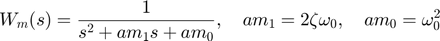
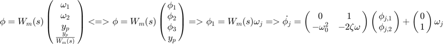
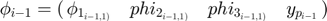
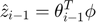
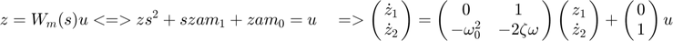
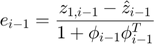
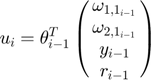
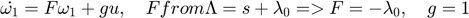
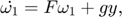
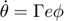

function [y,u,w1,w2,z,zhat,e,theta,r,ym,phi1,phi2,phi3] = MRAC(S,var,gamma) I = size(S.millis,2); PlantOrder = 2; RefOrder = 2; w0 =0.4; zeta = 1; y = zeros(I,PlantOrder); ym = zeros(I,PlantOrder); t = S.millis/1000; dt = [0, (S.millis(2:end) - S.millis(1:end-1))/1000]; %r = 3*cos(t); r = 5*ones(I,1); dr = -sin(t); w1 = zeros(I,PlantOrder-1); w2 = zeros(I,PlantOrder-1); z = zeros(I,PlantOrder); phi1 = zeros(I,RefOrder); phi2 = zeros(I,RefOrder); phi3 = zeros(I,RefOrder); zhat = zeros(I,1); theta = zeros(I,4); theta(1,1:end) = [0,0,0,1]; e = zeros(I,1); u = zeros(I,1); %du = -sin(t) F = -var; g = 1; Wm = [0 1; -w0^2 -2*zeta*w0]; B = [0 ;w0^2]; du = zeros(I,1); for i = 2:I
% if(i == I/5) % r = 5*ones(I,1); % end










phi = [phi1(i-1,1);phi2(i-1,1);phi3(i-1,1);y(i-1)];
%\pmatrix{ \cr}
%
zhat(i-1) = theta(i-1,1:end)*phi;
e(i-1) = (z(i-1,1) - zhat(i-1))/(1 + phi'*phi);
u(i) = theta(i-1,1:end)*[w1(i-1);w2(i-1);y(i-1);r(i-1)];
%Derivatives calculation
dym = plantref([ym(i-1,1);ym(i-1,2)],r(i),w0,zeta);
dy = plant(y(i-1,1),y(i-1,2),u(i),du(i));
dw1 = F*w1(i-1,1:end)' + g*u(i-1);
dw2 = F*w2(i-1,1:end)' + g*y(i-1,1);
dz = Wm*z(i-1,1:end)' + B*u(i-1);
dphi1 = Wm*phi1(i-1,1:end)' + B*w1(i-1);
dphi2 = Wm*phi2(i-1,1:end)' + B*w2(i-1);
dphi3 = Wm*phi3(i-1,1:end)' + B*y(i-1);
dtheta = gamma*e(i-1)*phi;
%Euler progression7
y(i, 1:2) = y(i-1, 1:2)+ dt(i)*[dy(1), dy(2)];
ym(i, 1:2) = ym(i-1, 1:2)+ dt(i)*dym';
w1(i,1:end) = w1(i-1,1:end) + dt(i)*dw1';
w2(i,1:end) = w2(i-1,1:end) + dt(i)*dw2';
z(i,1:end) = z(i-1,1:end) + dt(i)*dz';
phi1(i,1:end) = phi1(i-1,1:end) + dt(i)*dphi1';
phi2(i,1:end) = phi2(i-1,1:end) + dt(i)*dphi2';
phi3(i,1:end) = phi3(i-1,1:end) + dt(i)*dphi3';
theta(i,1:end) = theta(i-1,1:end) + dt(i)*dtheta';
end z=z(:,1); end function dy = plant(y1,y2,u,du) a0 = 1; a1 = 5; b0= 1; b1 = 0; %b0 = 1; a1 = 2; a0 = 3; b1 = 0; dy(1) = y2; dy(2) = (b1*du + b0*u - a1*y2 - a0*y1 * wgn(1, 1, 1)/2); end function dy = plantref(ym,u,w0,zeta) %b0 = 1; a1 = 2; a0 = 3; b1 = 0; dy = [0 1; -w0^2 -2*zeta*w0]*ym + [0;w0^2]*u; end
Not enough input arguments. Error in MRAC (line 3) I = size(S.millis,2);